DALE CARNEGIE · HOW TO WIN FRIENDS · PART TWO · CHAPTER 4 · PDF p96–104
An Easy Way to Become a Good Conversationalist
You do not need clever things to say. People call you a great talker when you let them do the talking and really pay attention.
Carnegie begins with two evenings where he barely spoke, yet was praised as charming company: a woman at a party who talked about her Africa trip for forty-five minutes, and a botanist who called him a "most interesting conversationalist" after a night of Carnegie mostly listening. From there the chapter piles up evidence that close attention is one of the strongest compliments you can pay. It saves a store's loyal customer, makes a child feel loved, calms a customer who had been suing the phone company, and turns an angry debtor into a friend for twenty-two years. It also gave a poor office boy a start in life and let Lincoln think out loud. Then comes the recipe for the opposite (talk about yourself, interrupt), and the advice: to be interesting, be interested.
Principle 4 of Part Two
Be a good listener. Encourage others to talk about themselves.
How the chapter fits together
pdf p96 · read this first
Where it sits. This is the fourth chapter of Part Two, "Six Ways to Make People Like You". The six ways build on one another: be genuinely interested in other people (Ch.4), smile (Ch.5), remember names (Ch.6), be a good listener (this chapter), talk in terms of the other person's interests (Ch.8) and make the other person feel important, sincerely (Ch.9). Listening is the moment Ch.4's "interest in others" becomes something the other person can actually feel. It also feeds straight into Ch.8: you can only talk about someone's interests once you have listened long enough to find out what they are.
The argument as a chain. Each row reacts to the one before it.
SurpriseCarnegie barely speaks→praised as a great conversationalist
Whyrapt attention = a compliment→people get to feel important→they like the listener
BusinessEliot: exclusive attentionclerk vs manager (Douglas)
HomeEsposito: "you stop and listen"
Angerphone company's worst customerDetmer's angry debtor→let them talk it out
OpportunityEdward Bok asks the famous about themselves
What people wantMarcossona doctor as an audienceLincoln's neighbourFreud→a listener, not advice
The oppositetalk about yourself · interrupt→a bore (Butler: "uneducated")
Insteadto be interesting, be interested→Principle 4
About the title: the chapter is called "An Easy Way to Become a Good Conversationalist", but its secret is that a good conversationalist is mostly a good listener. The "easy" part is real: you do not need wit, facts or stories, only attention. The hard part, as the last plates show, is keeping your own ego quiet long enough.
01 · THE OPENING STORY
The woman who asked about Carnegie's travels, then talked about Africa for 45 minutes
pdf p96
Carnegie opens with a small social scene from his own life, chosen because it is so ordinary.
a bridge partytwo people who don't play bridge45 minutesCarnegie's Africa: one day in Algiers
The situation. At a bridge party, Carnegie and a woman were the only two guests who did not play. She had found out that he had once managed Lowell Thomas (before Thomas became famous on radio) and had travelled widely in Europe helping him prepare his illustrated travel lectures. So she sat down with him and asked him to tell her all about the wonderful places he had seen.
What Carnegie did. On the sofa she mentioned, almost in passing, that she and her husband had just come back from Africa. Carnegie jumped on it. He said how interesting that was, that he had always wanted to see Africa but had only ever spent twenty-four hours in Algiers, asked whether they had been to the big-game country, said he envied her, and asked her to tell him about it.
What happened. She talked for forty-five minutes. She never came back to her question about his travels. She had not really wanted to hear about his trips at all.
The point Carnegie draws. What she wanted was an interested listener, someone who would let her "expand her ego" by telling where she had been. Her opening question was polite; her real wish was the Africa story. And Carnegie asks: was she unusual? His answer: no, a great many people are like that.
Notice the move. Carnegie had the better travel stories (Europe, years of it). He chose not to tell them. He did not even pretend to know Africa; his one day in Algiers was the honest truth, and it made his curiosity believable. He spotted the topic that mattered to her, asked a specific question about it, and showed he envied her trip.
Picture it
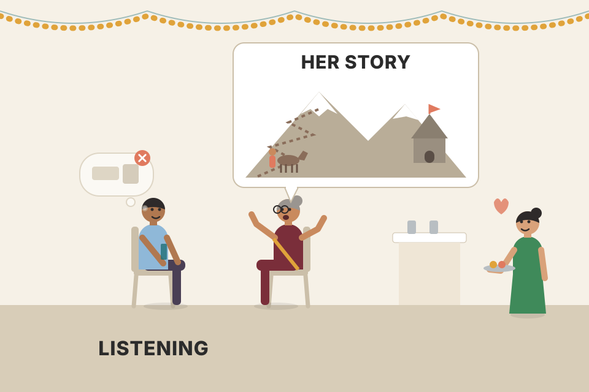
An aunty back from a Char Dham yatra asks you, at a family wedding, "You went to Europe for work, no? Tell me everything!" You say, "Europe was mostly hotel rooms, Aunty. But you did Kedarnath at your age? How did you manage the trek?" Forty minutes later you know every stop, the pony man's name and the temple timings, and she tells your mother you are such a nice, well-mannered child.
Where it breaks: at a wedding the aunty may be testing whether you will show off, so you get extra credit for not doing it. Some people really do want your story when they ask; Carnegie's claim is "many people", not "everyone". Listen to whether they come back to the question.
What's happening behind it
The book's explanation: people want a chance to feel important, and telling their own story to someone who is obviously enjoying it is one of the easiest ways to get that feeling. Carnegie calls it letting her "expand her ego".
Beyond the book: a 2012 Harvard study by Diana Tamir and Jason Mitchell found that talking about yourself activates the brain's reward areas (the same ones linked to food and money), and that people in their experiments would give up a little money for the chance to talk about themselves rather than about others. Studies of everyday conversation suggest roughly a third to 40% of what people say is about their own experiences. Carnegie had noticed the appetite; the lab later measured it.
At work
A new client asks politely, "So tell me about your company." You can give the 10-minute pitch deck, or you can give two sentences and say, "But you mentioned you just migrated off your old vendor. How did that go?" The second gets you their pain points, their politics and their timeline, and they leave thinking the meeting went well.
Interview angle. At the end of an interview, "Do you have any questions for me?" is your Africa moment. "What's the hardest problem your team solved this year?" gets the interviewer talking about something they are proud of, and the last minutes of the interview are the ones they remember.
Connects to
Being genuinely interested in other people (the root of this chapter): Part Two, Ch.1.
A "most interesting conversationalist" who hardly said a word
pdf p96–97
a New York publisher's dinnerabout a dozen guestshours with one manuntil midnight
The situation. At a dinner party given by a New York book publisher, Carnegie met a well-known botanist. He had never talked to a botanist before and found him fascinating.
What Carnegie did. He sat, in his own words, on the edge of his chair while the man talked about exotic plants, experiments in breeding new kinds of plants, indoor gardens, and some surprising facts about the ordinary potato. Carnegie happened to have a small indoor garden himself, and the botanist kindly told him how to fix some of its problems. Carnegie admits he broke every rule of good manners: there were about a dozen other guests, and he ignored all of them and talked with the botanist for hours.
What happened. At midnight Carnegie said good night and left. The botanist then turned to the host and praised Carnegie warmly: he was stimulating, this and that, and finally a "most interesting conversationalist".
The joke Carnegie points out. He had said almost nothing. He could not have said much without changing the subject, because he knew no more about botany than about a penguin's anatomy. What he had done was listen intently, because he was genuinely interested, and the botanist felt it. That kind of listening, he says, is one of the highest compliments you can pay anyone. He backs it with a line from the novelist Jack Woodford (Strangers in Love):
"Few human beings are proof against the implied flattery of rapt attention."Jack Woodford, quoted by Carnegie (pdf p97)
He went further than attention. Carnegie says he was also warm in his approval and generous with praise, borrowing the phrase Charles Schwab used in Ch.2 for how to treat people. He told the botanist four things, and stresses that each one was true:
What Carnegie told him
Was it true?
He had been hugely entertained and had learned a lot.
Yes, he had.
He wished he had the botanist's knowledge.
Yes, he did.
He would love to wander the fields with him.
Yes, and he later did.
He must see him again.
Yes, and he did.
The conclusion. The botanist thought of him as a fine conversationalist when, really, Carnegie had just been a good listener who encouraged him to talk. The sincerity is not decoration: the praise worked because every word could be checked against what Carnegie later actually did.
Try it: who held the floor? (modelled)
Slide to set how much of a conversation you talk. The readout guesses how the other person will describe it afterwards. The numbers are modelled for illustration, not from the book.
youthem
Picture it
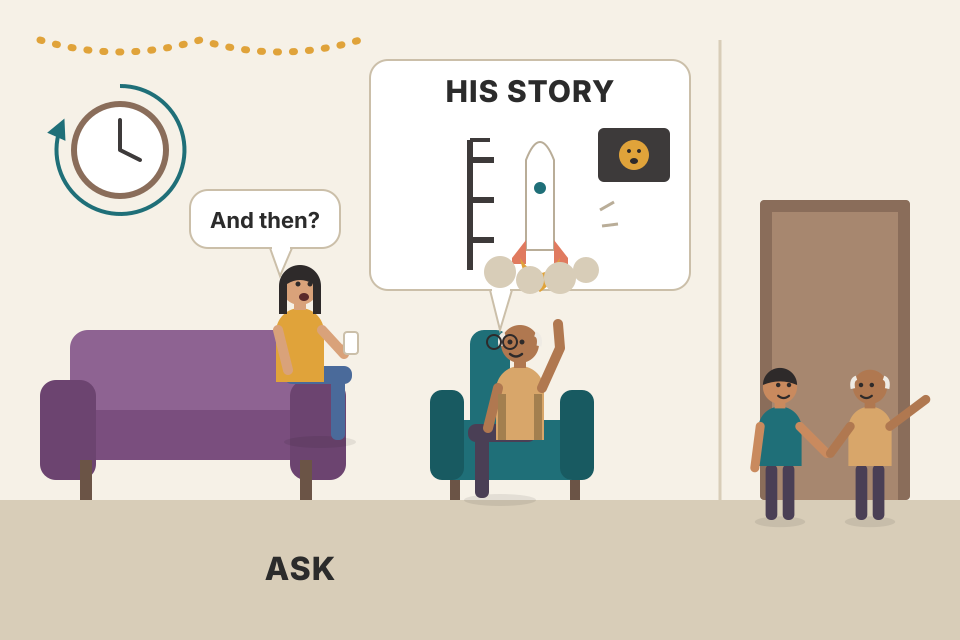
At a Bengaluru house party you get stuck next to a retired ISRO engineer. You know nothing about rockets except that PSLV is a rocket. You ask one question ("What was the scariest launch?") and then just keep asking "And then?" for an hour. On the way out he tells the host you are "a very sharp young fellow".
Where it breaks: the engineer had a great story and loved telling it. Not everyone does; a shy person needs easier questions and more of your own sharing to feel safe. And Carnegie ignoring the other eleven guests worked at a dinner party; at your own party, as host, it would be rude.
What's happening behind it
The book's explanation: rapt attention is a form of praise (Woodford's "implied flattery"). It tells the speaker that what they know is worth an evening of someone's time, and that feeds the desire to feel important. Sincere, specific praise on top of it seals the impression.
Beyond the book: Karen Huang and colleagues at Harvard (2017) studied speed-dating and online chats and found that people who asked more questions, especially follow-up questions about what the other person had just said, were liked more, and in speed dates got more second-date requests. Interestingly, the people asking did not realise this was why they were liked. That is the botanist effect, measured.
At work
A senior engineer from another team explains their old billing system to you. You do not know billing. Instead of nodding and planning your own design, ask "Why did you pick a ledger over plain balances?" and "What broke the worst?" You will learn the system's real history, and that engineer will review your design kindly next month because you are "someone who actually gets it".
Interview angle. In system-design interviews, the interviewer often has a favourite topic hidden in the prompt. One honest question ("You mentioned spiky traffic; what does a spike look like for you?") gets them talking, and the candidate who listens is often scored as the better communicator.
Worked example: the team lunch with the new hire
Talking to impress
"Oh, you used Kafka at your last job? We moved off Kafka last year, actually. I led that migration, it was a whole thing. Let me tell you what went wrong..."
You have the better story and they have to sit through it. They leave thinking you are smart, and a little tiring.
Listening (the botanist way)
"You ran Kafka in production? How big? What was the worst incident you had with it?" ... "Huh, I'd never thought of that. Can I steal that idea for our consumer retries?"
They talk; you learn; the praise is true. They leave feeling the new team values what they bring.
Connects to
"Hearty in approbation and lavish in praise", and why praise must be sincere: Part One, Ch.2.
Talking in terms of the other person's interests, the next step after listening: Part Two, Ch.5.
03 · THE BUSINESS SECRET
Charles Eliot of Harvard: listening is not silence, it is an activity
pdf p97–98
The claim. Carnegie asks what the secret of a successful business meeting is, and answers with Charles W. Eliot, the long-serving president of Harvard. Eliot said there was no mystery to it: giving your exclusive attention to the person speaking to you matters enormously.
"Nothing else is so flattering as that."Charles W. Eliot, quoted by Carnegie (pdf p97)
How Eliot himself listened. Eliot practised what he preached. The novelist Henry James, recalling him, made the point that Eliot's listening was work, not mere quiet. What James describes boils down to four habits:
Body still and uprightHands resting together; the only fidget was a slow twiddling of the thumbs.
Watching as well as hearingHe faced the speaker squarely and his attention showed on his face.
Thinking in real timeHe was weighing your point as you made it, not waiting for his turn.
Nothing left unsaidVisitors walked away feeling they had got their whole point across.
Obvious, so why rare? Carnegie says you do not need four years at Harvard to see this. Yet he knows store owners who rent expensive space, buy stock cleverly, dress their windows beautifully and spend thousands on advertising, then hire sales clerks who cannot listen: clerks who interrupt customers, contradict them, irritate them and all but chase them out of the store. All that investment, wasted at the last metre by someone who will not hear the customer out. (The next plate is exactly that.)
Picture it
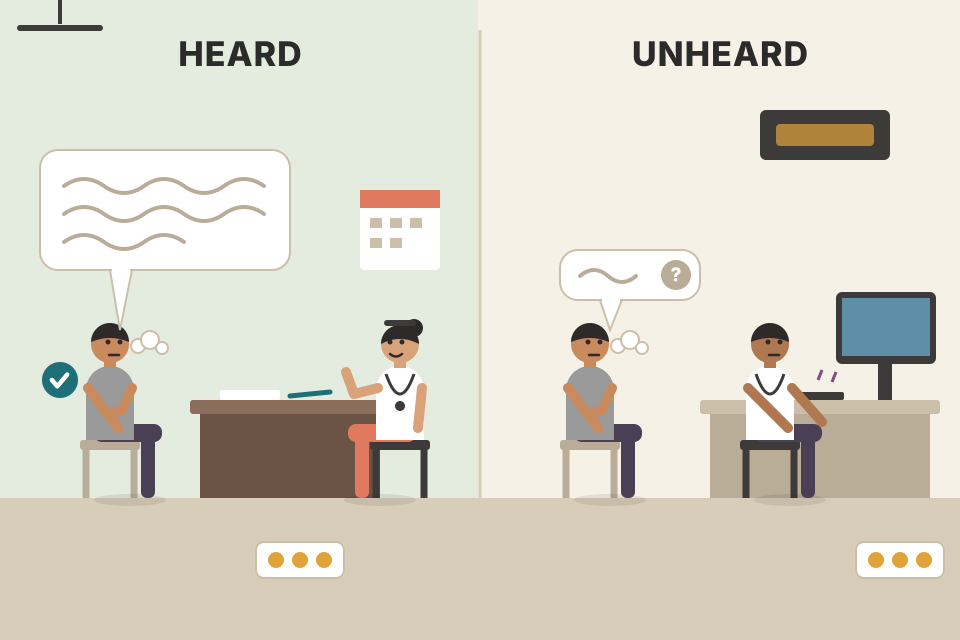
A good old-school family doctor in a small town: you sit down, she puts her pen down, turns her chair toward you and lets you finish the whole rambling story of your cough, nodding, asking one question about when it started. You walk out feeling better before you have bought the medicine. The doctor in the big hospital who types while you talk may prescribe the same tablets, and you still feel unheard.
Where it breaks: the doctor's attention also gets her a better diagnosis, so listening pays her twice. In small talk the "diagnosis" matters less; the attention is the whole gift. And a doctor with fifty patients waiting cannot give everyone twenty minutes; attention is a budget, which is why it flatters.
What's happening behind it
The book's explanation: undivided attention is flattering because it is costly. When someone gives you all of it, they are telling you that you matter more right now than anything else they could be doing.
Beyond the book: what James described is close to what Carl Rogers later called active listening: full attention, following the speaker's meaning, and showing you have understood. One modern twist: research by Andrew Przybylski and Netta Weinstein (2013) found that just having a phone visible on the table during a conversation made people rate the conversation and their partner less warmly. Eliot's still hands were doing real work.
At work
In a 1:1, the Eliot checklist is short: laptop closed or turned away, notifications off, face the person, and let them reach the end of their point before you reply. If you are taking notes, say so ("I'm writing this down so I don't lose it"), so the typing reads as attention, not distraction.
On video calls the "thumbs" are your camera and your eyes: cameras on for hard conversations, eyes on the call window (not on Slack in the next tab; people can tell from the reflections and the delays).
Interview angle. Interviewers notice whether you let them finish the question. Candidates who start answering at the first familiar keyword often answer the wrong question. Hearing it to the end, then restating it in one sentence ("So you want the read path for a feed with 10 million users?") is Eliot's listening, and it is scored.
Henrietta Douglas and the coat with the torn lining
pdf p98
A story from one of Carnegie's Chicago classes shows a store almost losing a valuable customer because one clerk would not listen, and keeping her because another person did.
Chicago department storea regular spending several thousand dollars a yeara sale coata torn lining
The situation. Mrs Henrietta Douglas, a long-time customer, bought a coat in a special sale. At home she found the lining was torn, so the next day she brought it back to exchange it.
The clerk. The clerk would not even hear the complaint. She pointed at the wall sign saying all sale purchases were final and told Mrs Douglas, in effect, that she had to keep it and could sew up the lining herself. When Mrs Douglas said the coat had been damaged when sold, the clerk cut her off: final meant final.
The turn. Mrs Douglas was about to walk out, vowing never to come back, when the department manager, who knew her from years of shopping there, greeted her. Mrs Douglas told her the story.
The manager. She listened to the whole story, looked at the coat, then explained: sales are "final" so the store can clear stock at the end of a season, but the no-returns rule does not cover damaged goods. The store would repair or replace the lining, or refund the money if Mrs Douglas preferred.
The result. One listening person kept a customer that one non-listening person had nearly lost for good.
What the clerk got wrong. She was not exactly lying; the sign was real. She applied a rule without hearing the facts that made the rule irrelevant. She also interrupted, contradicted and was curt, the exact list from Eliot's plate. The manager did not need special authority to fix it; she needed to hear the full story first.
Rewrite it
Pick a reply that sounds like the clerk, decide how you would rewrite it, then reveal a listening version and what changed.
Picture it
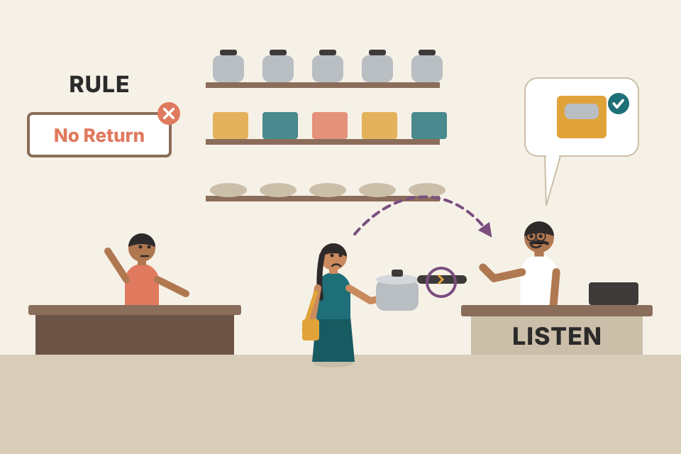
You return a pressure cooker with a cracked handle to a shop on MG Road. The boy at the counter points at the "Goods once sold will not be taken back" board and turns to the next customer. The owner, sitting at the cash desk, calls you over, asks what happened, turns the handle over in his hands and says, "This is a factory defect, that board is not for this. Take a new one." You will buy your next mixer there too.
Where it breaks: the shop owner can bend the rule because it is his shop. A junior clerk or a support agent often truly has no authority. Listening still helps them (they can escalate with the full facts, as the manager did), but listening alone does not create a refund.
What's happening behind it
The book's explanation: the clerk's refusal to listen turned a fixable problem (a torn lining) into an insult (being told to sew it yourself). The manager's attention signalled respect first, and only then gave the facts.
Beyond the book: service researchers call this the service recovery paradox: customers whose problem is handled well sometimes end up more loyal than customers who never had a problem. The evidence for the paradox is mixed, but the opposite is solid: a customer who feels unheard after a failure is very likely to leave and tell others.
At work
Your "sign on the wall" is a policy, a ticket template or a line in the API docs. A user opens an issue: "Your SDK drops events on reconnect." The clerk reply is "Works as documented, see the retry section", and the issue is closed. The manager reply asks for the logs, reproduces it, and then explains: "Retries are best-effort by design, but losing events on reconnect is a bug, not the design. Fix is in 2.4.1." Same rule; one person listened long enough to see it did not apply.
Interview angle. "Tell me about a time you dealt with an unhappy customer or stakeholder." A strong answer shows you heard the whole complaint before reaching for the policy, found the fact that changed the picture, and kept the relationship.
Seeing things from the other person's point of view: Part Three, Ch.8.
05 · AT HOME
Millie Esposito and her son: "you stop whatever you are doing and listen"
pdf p98–99
Carnegie says listening matters just as much at home as at work, and gives one short scene.
Millie EspositoCroton-on-Hudson, New Yorkher son Robertan evening in the kitchen
The habit. Mrs Esposito made a point of listening carefully whenever one of her children wanted to talk to her.
The scene. One evening she was in the kitchen with her son Robert. After they had talked over something on his mind, Robert told her he knew she loved him very much. Touched, she asked whether he had ever doubted it.
His answer. No, he said, but he really knew it because whenever he wanted to talk to her about something, she stopped what she was doing and listened to him.
Why it is in the chapter. The boy did not measure love by gifts, rules or speeches. He measured it by attention, in a very specific form: she stopped what she was doing. The interruption of her own task was the proof.
Picture it
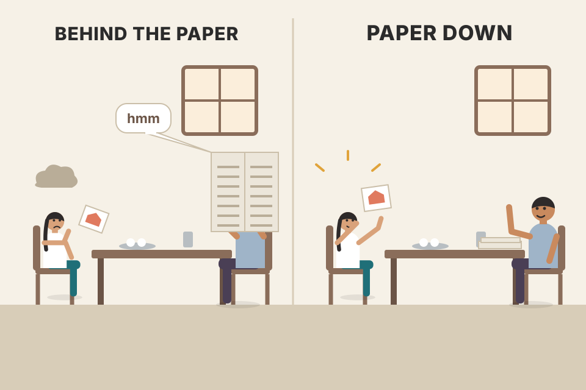
Your father is reading the newspaper at breakfast. When you were a kid and said "Papa, listen", the ones you remember are the mornings he folded the paper and put it down, not the ones where he said "hmm, go on" from behind the sports page. Nobody remembers what the headline was.
Where it breaks: a parent cannot stop everything every time, and a child who learns that "Papa" always stops the world may not learn to wait. Mrs Esposito's habit works because it was for "something on his mind", not every passing remark, and because she did it reliably when it mattered.
What's happening behind it
The book's explanation: listening is a visible form of love and respect. Robert read his mother's attention as proof he mattered to her.
Beyond the book: marriage researcher John Gottman calls small requests for attention ("look at this", "guess what happened") bids. In his long-term studies, couples who stayed together "turned toward" each other's bids far more often (in one study, around 86% of the time versus about 33% for couples who later divorced). The same pattern shows up between parents and children: the small, repeated moments of turning toward matter more than the big gestures.
At work
A junior engineer walks up with "Got a minute?" while you are deep in a debugging session. Stopping fully, even for two minutes ("Let me save this, OK, go"), says more about how you value them than any 1:1 template. If you truly cannot stop, say so and give a time ("I'm mid-incident; can I find you at 3?") and then keep it. Half-listening while typing is the worst option: it costs you the focus and still tells them they do not matter.
Connects to
Making the other person feel important, sincerely: Part Two, Ch.6.
"Father Forgets", the home story about the opposite of attention: Part One, Ch.1.
06 · THE CHRONIC KICKER
The phone company's angriest customer, and the troubleshooter who listened for four visits
pdf p99–100
The general claim. Even the most persistent complainer, even the most violent critic, will often soften when faced with a patient, sympathetic listener, someone who stays quiet while the angry person swells up (Carnegie's image is a king cobra spreading its hood) and spits the venom out of their system. His example is extreme on purpose.
New York Telephone Company~3 hours on the first visit4 visitscomplaint never mentioned until visit 4
The customer. The company had one of the most abusive customers a service representative had ever faced. He swore at staff, raged, threatened to rip his phone out of the wall, refused to pay charges he insisted were false, wrote letters to the newspapers, filed complaint after complaint with the Public Service Commission (the regulator) and started several lawsuits against the company.
The troubleshooter. The company finally sent one of its most skilled "troubleshooters". He let the man pour out his whole tirade and enjoy it, said "yes", and sympathised with the grievance. He later told one of Carnegie's classes that the man raved for nearly three hours, and that he went back and listened some more.
Step through the story
Carnegie's diagnosis. The man probably saw himself as a holy crusader defending the public against a heartless company. What he really wanted was a feeling of importance. At first he got it by kicking and complaining. As soon as a company representative gave him that feeling, by taking him seriously for hours, his imagined grievances vanished.
Picture it
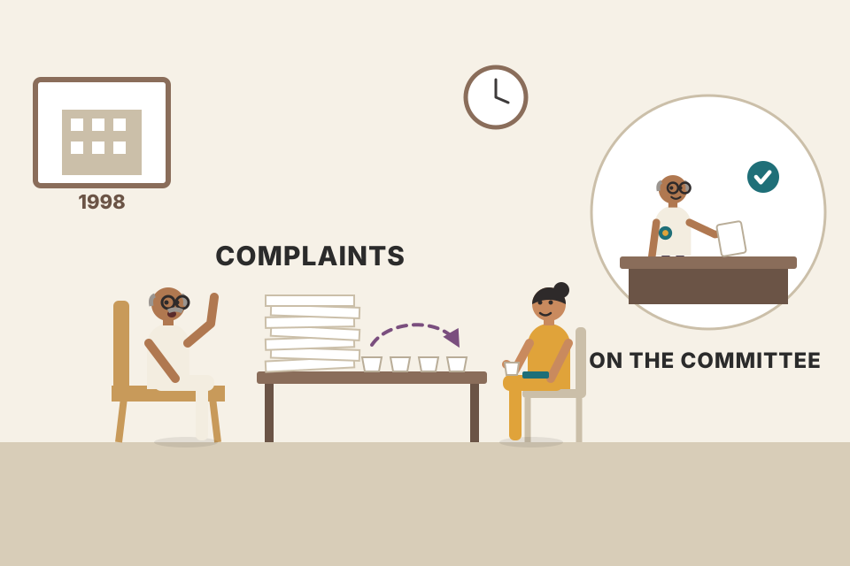
Every housing society has one: the uncle who writes three-page letters to the RWA about parking, emails the builder at midnight and threatens a consumer-court case every month. A new committee secretary goes to his flat, drinks his tea, and listens to the whole history of the society since 1998. After the fourth cup over a few weeks, the uncle is on the parking sub-committee and pays his maintenance dues on time.
Where it breaks: sometimes the chronic complainer has a real grievance, and a cup of tea is not a fix. The telephone story only works if the complaint is mostly about feeling ignored. If the parking really is unfair, listen, and then change the parking.
What's happening behind it
The book's explanation: the craving to feel important (Part One, Ch.2) can be fed in two ways: by fighting, or by being taken seriously. Give it the second way and the first is no longer needed. Never pressing the bill early mattered too: raising the bill on the first visit would have turned the troubleshooter back into "the company".
Beyond the book: Carnegie's cobra image (let the venom out) is the old "venting" or catharsis idea. Later research (for example Brad Bushman's work) suggests that venting on your own, like hitting a pillow, tends to keep anger alive rather than drain it. What helps is being heard and understood by someone, especially someone from the side you are angry with. The troubleshooter was not a pillow; he was the company, listening.
At work
A big customer's CTO joins the incident bridge furious, threatening to cancel and tweeting about your outage. Your instinct is to explain the root cause and the SLA credits. Instead: let them talk, acknowledge each point ("Yes, a status page that says green during an outage is unacceptable from your side"), take notes, and do not raise the renewal or the credits on that call. Follow up the next day, and the day after. The commercial conversation goes much better on visit four than on visit one.
Interview angle. "Tell me about your most difficult customer or stakeholder." The best stories are patient ones: several conversations, the hard ask held back until trust exists, and an outcome that the other side chose.
Julian Detmer and the customer who came to Chicago to refuse to pay
pdf p100–101
The second "angry customer" story, told to Carnegie by the man himself, goes further: listening does not just calm the customer, it wins a friend for life.
Julian F. DetmerDetmer Woolen Companylater the world's largest woollens supplier to tailorsa small disputed debt22 years
The situation. A customer owed the company a small sum. He denied it; the company was sure he was wrong, and its credit department kept sending him letters demanding payment. After a number of these, he packed a bag, travelled to Chicago and marched into Detmer's office to announce two things: he would not pay the bill, and he would never buy another dollar's worth of goods from the company.
What Detmer did, step by step.
He let him talk himself out. Detmer was tempted to interrupt but judged it would be a mistake, so he listened patiently until the man simmered down.
He thanked him. Quietly, he thanked the man for coming all the way to Chicago: if the credit department had annoyed him, it might be annoying other good customers too, so he had done Detmer a favour. Detmer said he was more eager to hear this than the man was to say it. Detmer thought the man was almost a little let down: he had travelled to Chicago ready for a fight and was being thanked instead.
He dropped the charge, with a face-saving reason. The bill would be wiped off the books. The customer was a careful man looking after one account; Detmer's clerks looked after thousands; so the customer was less likely to be the one who was wrong.
He sympathised. He said he understood how the man felt and would feel the same in his place.
He even helped him leave. Since the man was not going to buy from them any more, Detmer recommended some other woollen suppliers.
He kept the old ritual. They used to have lunch together on the man's Chicago visits, so Detmer invited him. The man accepted, reluctantly.
What happened. Back at the office after lunch, the man placed a larger order than ever before. He went home softened and, wanting to be as fair as Detmer had been, went through his papers, found a bill he had mislaid and sent a cheque with an apology. When his wife later had a baby boy, he gave the child the middle name Detmer. He stayed a friend and customer of the firm until he died, twenty-two years later.
Look at the order. Detmer listened first and argued never. Note too that the customer was, in the end, wrong: there really was an unpaid bill. Detmer did not need to win that point. Once the man felt heard and treated fairly, he corrected himself.
Dated wording. "Packed his grip" means packed his travelling bag; "woolen houses" means wholesale cloth suppliers. The baby-naming detail also comes from a time when such gestures were common; today the equivalent might be a glowing reference or a twenty-year vendor relationship.
Worked example: the angry email about an invoice
The credit-department reply
"Our records clearly show invoice #2231 is outstanding. Please note that per clause 7.2, continued non-payment may result in suspension of service. Kindly remit at the earliest."
Correct, firm, and the fastest way to lose the account. He arrives in your office to tell you exactly that.
The Detmer reply
"Thank you for taking the time to write so clearly, and I'm sorry our reminders have been a nuisance. If our billing process annoyed you, it's probably annoying others, so this helps. Can we get on a call? I want to hear what happened from your side before anything else."
Listens first, thanks him, offers a call. The invoice question can wait; often the customer settles it himself.
Picture it
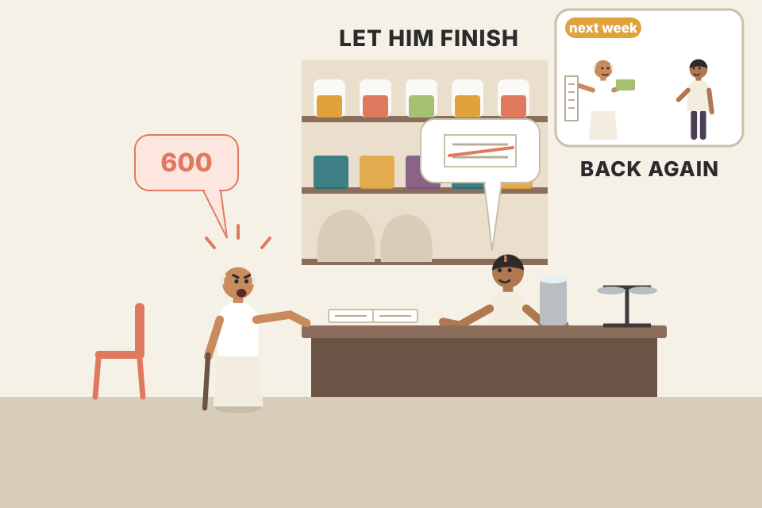
A kirana shop owner's oldest customer storms in shouting that the shop has written ₹600 too much in his monthly khata book, and he is going to the new supermarket from now on. The owner lets him finish, offers him a chair and a glass of water, says "You keep your own accounts very carefully, I have a hundred customers to write for; let me just strike it off," and asks about his grandson's exams. The next week the uncle comes back, a little sheepish, with the ₹600 and a bigger list than usual.
Where it breaks: writing off a small amount to keep a long relationship is a good bet. Writing off a large amount for a customer who never comes back is just a loss. Detmer could afford a "small sum"; the trick does not scale to every dispute.
What's happening behind it
The book's explanation: interrupting would have been bad policy because it keeps the fight going. Once the man had talked himself out he was ready to listen, and Detmer's thanks and generosity were the last thing he expected. Treated fairly, he wanted to be fair back.
Beyond the book: the final twist (he found the mislaid bill himself) is reciprocity, the strong human urge to return a favour, described by Robert Cialdini in Influence. Detmer also gave the man a way to back down without losing face: the "one account vs thousands" reasoning made it reasonable for him to have been right, so later admitting he was wrong cost him nothing.
At work
A partner team escalates to your director: "Your service broke our integration and your team keeps blaming us." Your logs say their client was misconfigured. The Detmer sequence: get on a call, let them finish, thank them for raising it ("if this is how it looks to you, other teams probably feel it too"), concede what you can (your error message really was unhelpful), and fix that. Very often, they find their own config bug the next morning and say so.
Interview angle. "Tell me about a time you disagreed with someone and were right." Detmer is the model answer: you did not need to win the argument; you kept the relationship, and the facts came out anyway.
Appealing to nobler motives (he paid because he wanted to be fair): Part Three, Ch.10.
08 · LISTENING AS A LADDER
Edward Bok, a poor office boy who asked famous people about themselves
pdf p101–102
Carnegie now shows the principle opening doors, not just calming tempers. He tells only the beginning of a long life story, because the beginning is where this chapter's principle did the work.
Dutch immigrant boy6 years of schoolingleft school at 13Western Union office boyGrant's dinner at 14
Where he started. Edward Bok's family was very poor. After school he washed a bakery's windows to help support them, and every day he went into the street with a basket to pick up bits of coal that had fallen into the gutter from delivery wagons. He had no more than six years of schooling in his whole life, and left school at thirteen to become an office boy for Western Union.
How he educated himself. He never gave up the idea of an education. He saved his tram fares and skipped lunches until he could buy an encyclopaedia of American biography. Then he did something nobody did: he read the lives of famous people and wrote to them asking for more about their childhoods.
Who answered.
James A. Garfield, then running for President, was asked whether it was true he had once worked as a tow boy on a canal (leading the horses that pulled the boats). Garfield wrote back.
General Ulysses S. Grant was asked about a particular battle. Grant drew him a map, invited the fourteen-year-old to dinner and spent the evening talking with him.
Soon the messenger boy was writing to many of the most famous people in the country: Ralph Waldo Emerson, Oliver Wendell Holmes, Longfellow, Mrs Abraham Lincoln, Louisa May Alcott, General Sherman and Jefferson Davis.
On his holidays he visited many of them and was welcomed as a guest in their homes.
The result. The experience gave him a confidence he could not have got any other way, and these people filled him with a vision and ambition that shaped his life. He became one of the most successful magazine editors in American history. Carnegie insists all of it was made possible by this chapter's principle: Bok was a good listener, and he asked famous people to tell him more about themselves.
Why it worked. Busy, famous people get endless letters asking for things: money, jobs, favours. Bok asked for nothing but their own story, and about a topic (their childhood) that few people ever asked them about. Answering him was a pleasure, not a chore.
Which message gets a reply?
Pick a message to see how Bok's method would judge it.
Picture it
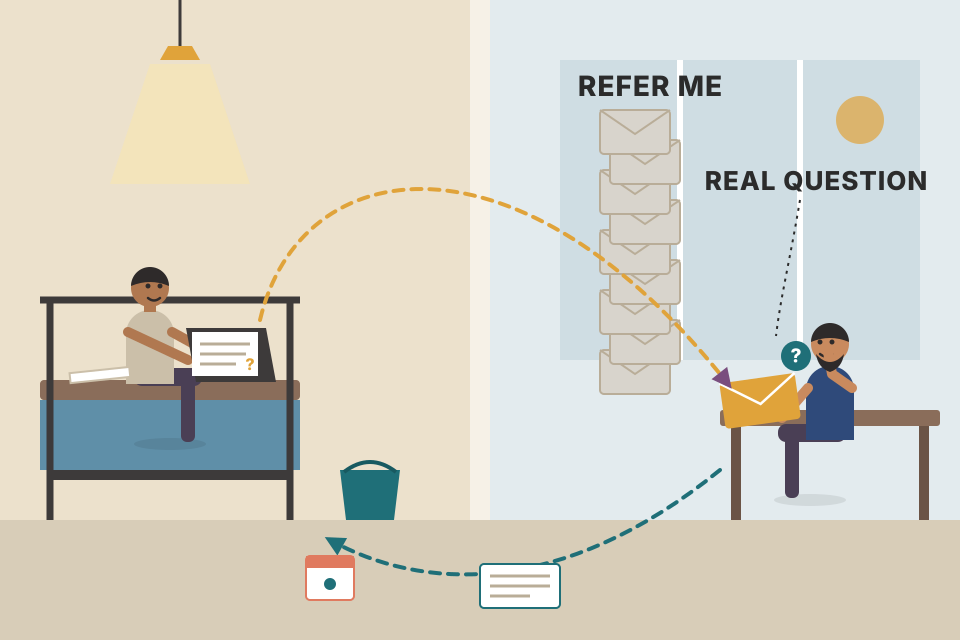
A first-year engineering student from a small town in Andhra, with no contacts at all, reads a well-known founder's interview and writes him a short email: "You said you failed your first company in Hyderabad in 2009. What was the moment you knew it was over?" The founder, who gets a hundred "please refer me" messages a week, answers this one in a long reply, and later invites the student to a meetup.
Where it breaks: in Bok's day, a letter to Grant was rare; today famous people get thousands of messages and many never read them. The idea still works, but at a smaller scale: senior engineers, authors of blog posts you liked, speakers after a talk. And it works only if the question shows you actually read their story.
What's happening behind it
The book's explanation: even the most famous people like to be asked about themselves. A boy who sincerely wanted to hear their story became, to them, a welcome listener rather than a nuisance.
Beyond the book: in studies from 2008 onward, Francis Flynn and Vanessa Lake (later Bohns) found people greatly underestimate how willing others are to help when asked directly. And asking about someone's past (rather than asking for a favour) costs them nothing but time spent on a topic they enjoy, the "self-disclosure is rewarding" effect from plate 1. Bok's own autobiography, The Americanization of Edward Bok (1920), won a Pulitzer Prize and tells this part of his life in detail.
At work
Cold outreach to a senior engineer at a company you want to join: "Can you refer me?" is a request. "I read your post on moving your queue off Redis. What would you do differently now?" is a Bok letter. People answer the second, and the referral, if it comes, comes because they now know you.
Inside your own company: ask the person who built the legacy system how it came to be. It is the fastest way to learn the code's hidden rules, and the original author becomes an ally rather than a gatekeeper.
Connects to
Talking in terms of the other person's interests: Part Two, Ch.5.
Becoming genuinely interested in other people (Carnegie's letters to famous authors there follow the same method): Part Two, Ch.1.
09 · WHAT PEOPLE ACTUALLY WANT
Marcosson's warning, a doctor as an audience, and Lincoln's old neighbour
pdf p102–103
Three short pieces of evidence that everyone, important or not, wants to be heard more than they want to be talked to.
1. Isaac F. Marcosson, a journalist who interviewed hundreds of celebrities, said many people make a poor impression because they do not listen closely. They are so busy thinking about what they will say next that their ears are shut. Very important people had told him they preferred good listeners to good talkers, yet the ability to listen seemed rarer than almost any other good trait.
2. Ordinary people too. It is not only the famous. Carnegie quotes the Reader's Digest:
"Many persons call a doctor when all they want is an audience."Reader's Digest, quoted by Carnegie (pdf p102)
3. Lincoln's old neighbour. In the darkest days of the Civil War, Lincoln wrote to an old friend in Springfield, Illinois, asking him to come to Washington because he had problems to discuss. The neighbour came to the White House. For hours Lincoln talked about whether he should issue a proclamation freeing the slaves: he went through every argument for and against, and read out letters and newspaper articles, some attacking him for not freeing the slaves and others attacking him because they feared he would.
The ending. After hours of this, Lincoln shook his friend's hand, said good night and sent him home to Illinois without once asking his opinion. Lincoln had done all the talking, and it seemed to clear his mind. The friend said Lincoln seemed easier after the talk.
Carnegie's lesson. Lincoln did not want advice. He wanted a friendly, sympathetic listener to unload on. That, Carnegie says, is what all of us want when we are in trouble, and it is often all that the irritated customer, the dissatisfied employee or the hurt friend wants too.
Which response? Listen or fix
Pick a response to see how Carnegie would judge it.
Picture it
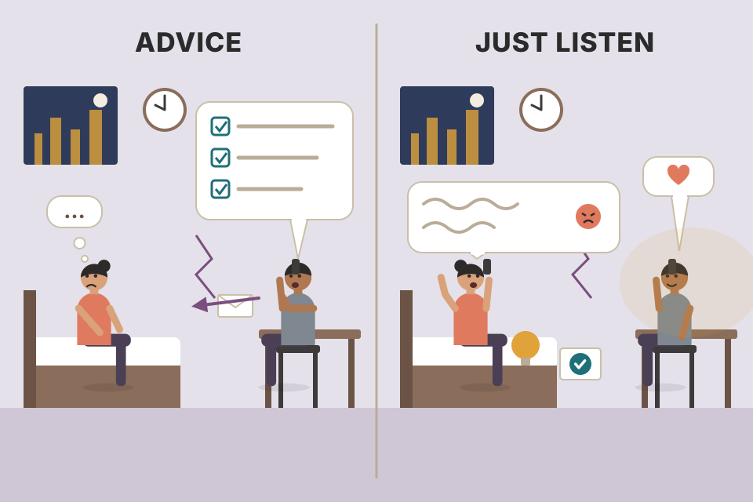
Your friend calls at 11 p.m. from Pune, upset about a fight with her manager. You start saying "OK, here's what you do: email HR, document everything…" and she goes quiet. The next time, you just say "Ugh, that sounds awful, what did he say then?" and let her talk for twenty minutes. At the end she says, "Thanks, I know what I'll do tomorrow," and you never gave a single suggestion.
Where it breaks: sometimes the friend really is asking for advice, and silence feels like you do not care. Lincoln had already chosen his friend as a listener. If you are unsure, ask: "Do you want ideas, or do you just want to vent?"
What's happening behind it
The book's explanation: people in trouble need to unburden themselves. Talking it through to a sympathetic listener clears their own mind; they often already have the answer.
Beyond the book: research on writing and talking about hard experiences (James Pennebaker's work on expressive disclosure) finds that putting a problem into words helps people organise it and feel better. Psychologists also describe "thinking out loud": explaining a problem to someone forces you to structure it. Programmers know this as rubber-duck debugging, explaining your code line by line to a rubber duck until you spot the bug yourself. Lincoln's friend was a very distinguished rubber duck.
At work
A report in your 1:1 starts, "I'm not sure about this promotion track." The manager reflex is to explain the career ladder. Try instead: "Tell me more. What's pulling you each way?" and then stay quiet. Often they talk themselves to a decision, and it is theirs. The same goes for the "dissatisfied employee" Carnegie names: many resignations start as complaints nobody fully listened to.
In design reviews, Marcosson's warning is the one to watch: if you are drafting your rebuttal while a colleague is still presenting, you are not hearing the part that might change your mind.
Interview angle. Behavioural interviewers often ask follow-ups to see if you heard them. Answer the question asked, and when unsure, check ("Do you want the technical details, or how I handled the team?").
Connects to
Let the other person do a great deal of the talking: Part Three, Ch.6.
Be sympathetic with the other person's ideas and desires: Part Three, Ch.9.
Lincoln as a man who learned not to criticize: Part One, Ch.1.
10 · A MASTER LISTENER
How Sigmund Freud listened
pdf p103
Carnegie calls Freud one of the great listeners of modern times, and quotes a man who met him and never forgot the experience. Boiled down, the visitor was struck by four things:
Total focusHe had never met anyone who concentrated on him so completely.
Gentle, not probingNo dramatic analyst's stare; Freud's look was warm and relaxed.
Calm mannerHe spoke softly and hardly moved his hands.
Generous hearingHe took the visitor's words seriously even where they came out clumsily.
The effect. The visitor said you could not imagine what it meant to be listened to like that. Put Freud next to Eliot (plate 3) and a pattern appears: both were calm and still, both kept their attention on the other person rather than on performing "listening", and both left the speaker feeling fully heard.
Note what the visitor praises: not technique, but the absence of technique. No intense eye contact, no dramatic nodding. The attention itself was the message.
Picture it
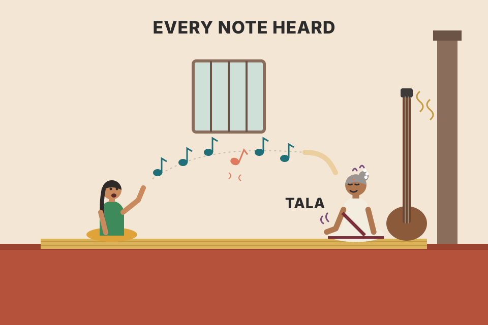
A good Carnatic music guru listening to a student sing: eyes half-closed, hand keeping the tala on her knee, no frowning at the mistakes. When the student stumbles on a sangati, she nods as if the attempt was interesting. The student wants to sing better for her, not out of fear but because she is clearly hearing every note.
Where it breaks: the guru is also judging and will correct afterwards; Freud too was listening for a reason (to understand and treat). Listening with appreciation does not mean never assessing. It means the speaker does not feel judged while speaking.
What's happening behind it
The book's explanation: concentrated, appreciative attention is rare, so people feel it deeply and remember it.
Beyond the book: Freud's method relied on letting patients speak freely ("free association"), which required a listener who would not interrupt or show shock. Carl Rogers later built a whole therapy on unconditional positive regard: accepting what the person says without judging them, so they feel safe enough to say more. Both are versions of "appreciation even when I said it badly".
At work
A junior engineer explains a bug clumsily in stand-up, mixing up two services. The Freud response: no sigh, no "that's not how it works"; a mild "So the request hits auth first, then times out? Got it." Later, privately, you can untangle the details. People who are listened to like this bring problems early; people who are corrected mid-sentence learn to stay quiet until it is too late.
11 · THE OPPOSITE
The recipe for being a bore, and why Butler called such people "uneducated"
pdf p103
The anti-recipe. If you want people to avoid you, laugh at you behind your back and even despise you, Carnegie says, here is how:
Never listen to anyone for long.
Talk endlessly about yourself.
If an idea comes to you while the other person is talking, do not wait for them to finish: barge in and interrupt in mid-sentence.
Who does this? Carnegie says he knows people like that, and the surprising part is that some of them are prominent. He calls them simply bores, drunk on their own egos and their sense of their own importance.
Nicholas Murray Butler, the long-time president of Columbia University, went further. People who talk only about themselves, Carnegie notes, think only about themselves, and Butler said such people are:
"hopelessly uneducated … no matter how instructed they may be."Nicholas Murray Butler, quoted by Carnegie (pdf p103)
What Butler means. "Instructed" is having knowledge: degrees, facts, skill. "Educated" is something more: being able to step outside yourself and take an interest in others. A brilliant person who only ever talks about themselves has the first without the second.
Self-audit: in conversations this week, did I…
Picture it
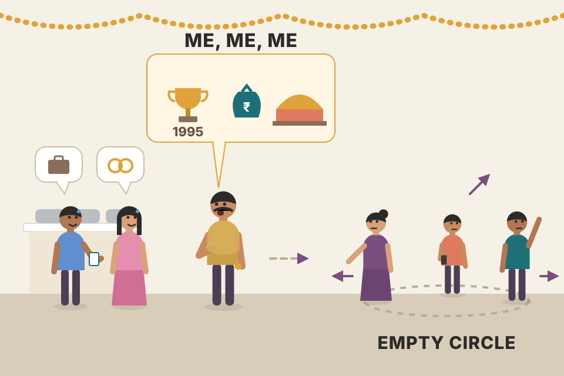
The relative at every family function who, whatever you say, turns it to himself. You mention your new job; he tells you about his promotion in 1995. Your cousin mentions her wedding plans; he tells you what his wedding cost. Everyone smiles and nods, and when he walks toward a group, it quietly breaks up.
Where it breaks: in a family, people often keep loving the bore anyway; the cost is that nobody tells him anything real. At work there is less affection to absorb it, so the cost shows up faster: people stop inviting him to meetings and stop telling him things he needs to know.
What's happening behind it
The book's explanation: the bore is "intoxicated" with ego. Talking only about yourself shows you think only about yourself, and people feel it as disrespect.
Beyond the book: sociologist Charles Derber called the habit of turning every conversation back to yourself the "shift response" ("I'm so tired." "Me too, I slept four hours."), as against the "support response" ("Why, what kept you up?"). Most people make shift responses without noticing; each one quietly takes the floor away from the other person. Interrupting has a second cost: research on conversation finds that people who are interrupted rate the interrupter as less warm and less likeable, even when the interruption was meant as enthusiasm.
At work
In a meeting, the senior engineer who talks over the junior's proposal with "Yeah, we tried that at my last company" is running the bore recipe in three seconds: he did not listen for long, he made it about himself, and he interrupted. The idea he cut off might have been fine. And the junior will not bring the next idea to that meeting.
Interview angle. Panel interviews notice this. Candidates who talk over interviewers, or who turn every question into a speech about their past achievements, are often marked down for "collaboration" even when the technical content is strong.
Worked example: shift response vs support response
Shift (the bore)
Teammate: "The migration took all weekend." You: "Ugh, tell me about it. Mine took two weekends last year, and we had to roll back twice. Let me tell you…"
You took the floor. They will not finish their story.
Support (the listener)
Teammate: "The migration took all weekend." You: "All weekend? What was the part that dragged?"
They keep talking; you learn what went wrong; they feel heard. Your own story can come later, if they ask.
12 · THE PRINCIPLE
To be interesting, be interested: Principle 4
pdf p103–104
Carnegie's advice, step by step. If you want to be a good conversationalist:
Be an attentive listener.
To be interesting, be interested. Interest in the other person is what makes you seem interesting.
Ask questions the other person will enjoy answering.
Encourage them to talk about themselves and what they have achieved.
The reason behind it. Remember that the people you talk to are a hundred times more interested in themselves, their wants and their problems than in you and yours. Carnegie makes the point with a deliberately shocking comparison: to most people, their own toothache means more than a far-away disaster that kills a million; a boil on their own neck interests them more than forty distant earthquakes. Think of that, he says, before you start your next conversation.
Dated wording. The book's examples are a famine in China and forty earthquakes in Africa. By today's standards they read as careless about other countries' suffering. The point does not depend on them; a modern version is: your own phone screen cracking can feel bigger to you than a disaster you read about on the news. Carnegie is describing human attention, not approving of it.
Principle 4 of Part Two
Be a good listener. Encourage others to talk about themselves.
Reflect, then reveal: a question they would enjoy answering
Think of one person you will talk to this week (a teammate, your manager, a relative). Write one question you could ask them that they would enjoy answering. Nothing is saved.
Picture it
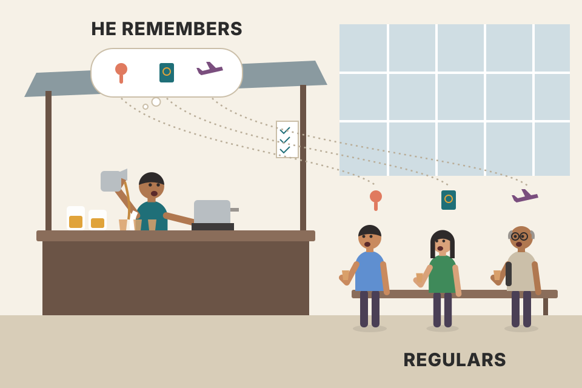
A chai-stall owner near a Bengaluru tech park has customers who come back every day for years. His tea is fine, but what they come for is that he remembers who has a new baby, who is waiting on a visa, and asks, "So, did the onsite come through?" He talks very little about himself. Ask the regulars and they will tell you he is the best conversationalist on the road.
Where it breaks: the chai-wallah's questions are short and the customer leaves in five minutes. In longer relationships people also want to know you; a friend who only asks and never shares starts to feel like an interviewer. Listening is the bigger half of a conversation, not all of it.
What's happening behind it
The book's explanation: everyone's attention is pulled toward their own life. Fight that and you bore them; go with it (ask about their life) and you become good company.
Beyond the book: the Huang study from plate 2 found follow-up questions are the strongest kind: they prove you heard the last answer. Arthur Aron's "36 questions" experiment (1997) showed that strangers who took turns asking and answering increasingly personal questions felt much closer after 45 minutes. Note the turn-taking: in Aron's study both people asked and both answered.
At work
Questions people enjoy answering at work: "What's the part of this codebase you're proudest of?", "How did you end up on this team?", "What would you change first if you had a free sprint?", "What's the best bug you ever found?" They are about the person's own experience and judgement, they have no wrong answer, and the follow-up ("How did you find it?") keeps it going.
Interview angle. Behavioural interviews reward this too: "How do you build relationships with a new team?" A strong answer is concrete: 1:1s in the first weeks where you mostly ask questions, learn each person's history with the codebase, and write down what they care about.
Connects to
Talk in terms of the other person's interests (the next chapter turns listening into topics): Part Two, Ch.5.
Make the other person feel important, sincerely: Part Two, Ch.6.
Arouse in the other person an eager want (start from what they want): Part One, Ch.3.
13 · WRAP-UP
Summary and key terms
pdf p96–104
A good conversationalist is mostly a good listener. The woman at the bridge party asked about Carnegie's travels, then happily talked about her own Africa trip for 45 minutes. The botanist called Carnegie a "most interesting conversationalist" after a night of Carnegie listening, plus four honest compliments.
Rapt attention is flattery. Woodford: few people can resist it. Eliot: exclusive attention to the speaker is the whole secret of business meetings, and he listened actively (upright, still, facing you, thinking along).
Not listening costs money. Stores spend on rent, stock and ads, then lose customers through clerks who interrupt and contradict. Mrs Douglas nearly left for good over a torn lining until a manager listened and pointed out sale-is-final never covered damaged goods.
At home, attention is proof of love. Robert Esposito knew his mother loved him because she stopped what she was doing to listen.
Listening disarms anger. The phone company's worst customer, after four visits and hours of being heard, paid in full and withdrew his complaints; what he wanted was to feel important. Detmer let an angry debtor talk himself out, thanked him, wrote off the charge, and won a bigger order, an apology cheque and 22 years of friendship.
Listening opens doors. Edward Bok, a poor office boy, asked famous people about their childhoods; Garfield wrote back, Grant had him to dinner, and he went on to become a great magazine editor.
Everyone wants a listener. Marcosson: people fail because they are planning their next line; the important prefer listeners. Many call a doctor for an audience. Lincoln talked for hours and never asked his friend's opinion. Freud's mild, concentrated, appreciative attention was unforgettable.
The bore's recipe is to never listen, talk about yourself and interrupt. Butler: such people are uneducated however instructed.
Principle 4: Be a good listener. Encourage others to talk about themselves. To be interesting, be interested; ask questions people enjoy answering; remember people care far more about their own toothache than about distant disasters.
Term or phrase
Meaning on this page
Where
Principle 4
Be a good listener. Encourage others to talk about themselves.
pdf p104
Interested listener
What most people want more than your stories (the Africa woman).
pdf p96
Rapt attention
Full, absorbed attention; a compliment few can resist (Woodford).
pdf p97
Exclusive attention
Eliot's secret of a successful business meeting.
pdf p97
Listening as an activity
Henry James on Eliot: not silence but focused work, hearing "with the eyes".
pdf p97–98
Chronic kicker
A habitual complainer; softens in front of a patient, sympathetic listener.
pdf p99
Feeling of importance
What the phone company's angry customer really wanted.
pdf p100
Talk himself out
Detmer's move: let the angry person finish before replying.
pdf p100
An audience, not a doctor
People often want to be heard, not treated or advised.
pdf p102
Bore
Someone who never listens, talks about themselves and interrupts.
pdf p103
Instructed vs educated
Butler: knowing a lot is not the same as being able to care about others.
pdf p103
To be interesting, be interested
Interest in others is what makes you seem interesting.
pdf p103
14 · USE IT
Practice this week
beyond the book
Small exercises, each with a way to tell whether it worked. The exercises are ours; the ideas behind them are the chapter's.
The Africa move. The next time someone asks about you, answer in two sentences and turn it back with a specific question about something they mentioned. Worked if: they talk for longer than you did, and you learn one thing you did not know about them.
Three follow-ups. In one conversation a day, ask at least three follow-up questions in a row ("And then?", "Why that one?", "What was the hardest part?") before saying anything about yourself. Worked if: the conversation goes somewhere you could not have predicted.
The Eliot setup. In every 1:1 this week, close the laptop (or turn it away), silence the phone and face the person. Worked if: someone raises a topic they had not planned to raise.
Count your shifts. For one day, notice each time you answer someone's story with your own similar story (a shift response). Swap one in three for a question. Worked if: your count goes down by the end of the day.
Ask before you fix. When someone brings you a problem, ask "Do you want ideas, or do you want to talk it through?" before giving advice. Worked if: at least once, they solve it themselves while talking.
One Bok letter. Write to one person you admire (a senior engineer, a blog author) with a specific question about their own story, not a request. Worked if: you get a reply longer than "thanks".
15 · LIMITS
Where it can go wrong
pdf p96–104 · plus beyond the book
The book's own caveats first.
The interest must be real. Carnegie listened to the botanist "because he was genuinely interested", and every compliment he paid was true (he did go walking in the fields with him later). This chapter rests on Ch.4: fake interest is the flattery that Ch.2 warns against.
Listening is not the same as giving in on everything. The store manager still applied the policy; she just heard enough to see it did not fit. The troubleshooter still closed the billing case on the fourth visit.
Carnegie admits his own manners slipped. He says he broke every rule of courtesy by ignoring a dozen other guests for the botanist. Giving one person all your attention can neglect others.
"Many" people, not all. He says the Africa woman was typical of many people, not of everyone.
Beyond the book: our critique
Listening can become a technique to extract things. If you listen only to get a sale, a referral or a signature, people notice the moment the "real" topic arrives. Detmer and the troubleshooter got their outcomes because the listening was not a set-up.
Pure listening can feel one-sided. Research on closeness (Aron's study) shows relationships grow with mutual sharing. A person who only asks and never shares can seem guarded or like an interviewer. Listen more than you talk, but do talk.
Some problems need action, not an audience. Lincoln wanted a listener; a teammate stuck on a production bug at 2 a.m. wants help. A report who complains about the same blocker for six weeks needs you to remove it, not hear about it a seventh time.
Listening has limits with abuse. The telephone customer's raging was tolerated for hours. Modern support teams rightly have rules for abusive callers; you can listen to anger without accepting threats or harassment.
Power and gender shape who gets to talk. In many meetings, the people who are interrupted most are junior staff and women. Being a good listener as a lead also means making room for others to be heard (calling on the quiet person, stopping the interrupter), not just staying quiet yourself.
Culture changes the signals. Eliot's steady face-to-face attention and Western-style eye contact read as respect in some cultures and as too intense in others. In many Indian settings, a nod and "haan, haan" are active listening; in others, silence is. Watch what makes the other person keep talking.
The evidence is anecdotes. The stories are well chosen but selected to fit. The general claim (people like those who listen and ask follow-up questions) is supported by later research; the claim that Bok's whole career came "solely" from this principle is Carnegie's enthusiasm.
16 · TEST YOURSELF
Check yourself
pdf p96–104
Try to answer before opening each one. The first half is story recall; the second half is using the principle.
1. What did the woman at the bridge party ask Carnegie, and what happened instead?
She asked him to tell her about the places he had visited (she knew he had managed Lowell Thomas and travelled in Europe). When she mentioned her own trip to Africa, he said he had only spent a day in Algiers and asked her about it. She talked for 45 minutes and never returned to his travels; she only wanted an interested listener.
2. Why did the botanist call Carnegie a "most interesting conversationalist"?
Carnegie had listened intently for hours because he was genuinely interested, and told him four true things: he had been entertained and taught, he wished he had his knowledge, he would love to wander the fields with him, and he must see him again. He had barely spoken; he knew nothing about botany.
3. What did Charles Eliot say is the "secret" of a successful business interview, and how did Henry James describe Eliot's listening?
Exclusive attention to the person speaking; nothing is more flattering. James said his listening was an activity, not silence: he sat upright, hands in his lap, only his thumbs moving, faced the speaker, seemed to listen with his eyes, and thought about what you said as you said it, so you felt you had had your say.
4. What went wrong and what went right for Henrietta Douglas?
A clerk refused to hear her complaint about a torn coat lining, pointed to the "all sales final" sign and told her to sew it herself. The department manager, who knew her, listened to the whole story, explained final-sale rules exist to clear seasonal stock and do not cover damaged goods, and offered repair, replacement or a refund. A customer worth thousands a year was kept.
5. How did Robert Esposito know his mother loved him?
Because whenever he wanted to talk, she stopped what she was doing and listened.
6. How did the telephone troubleshooter resolve the case of the company's angriest customer?
He listened, said yes and sympathised, about three hours the first time, over four visits, and did not raise the billing issue until the fourth. He even joined the man's "Telephone Subscribers' Protective Association". On the fourth visit the man paid all his bills and voluntarily withdrew his complaints. Carnegie's diagnosis: he wanted a feeling of importance.
7. List Detmer's moves with the angry customer and the outcome.
Let him talk himself out without interrupting; thanked him for coming; said he was more eager to hear it than the man was to tell it; wrote off the charge (one careful man with one account vs clerks with thousands); said he would feel the same; recommended other suppliers; took him to lunch. Result: a bigger order than ever, a mislaid bill paid with an apology, a son with the middle name Detmer, and 22 years as a customer and friend.
8. How did Edward Bok use this principle?
A poor immigrant office boy with six years of schooling, he bought an encyclopaedia of American biography and wrote to famous people asking about their childhoods. Garfield answered; Grant drew him a map and had him to dinner at 14; he corresponded with Emerson, Holmes, Longfellow, Mrs Lincoln, Alcott, Sherman and Jefferson Davis and visited many of them. It gave him confidence and ambition; he became a leading magazine editor.
9. What did Lincoln want from his old Springfield neighbour?
Only a listener. He talked for hours about whether to free the slaves, read letters for and against, and sent his friend home without asking his opinion. It cleared his mind. Carnegie says the irritated customer, the dissatisfied employee and the hurt friend often want the same.
10. What is Carnegie's recipe for being avoided and despised?
Never listen for long, talk about yourself all the time, and interrupt people mid-sentence when you think of something. Butler called people who think only of themselves hopelessly uneducated, however instructed.
11. Application: in a 1:1 a report says, "I'm really frustrated with how the reorg was handled." What is the Lincoln move, and when is it the wrong move?
Listen and encourage ("Tell me more. What was the worst part?"), without defending the reorg or jumping to fixes; often they need to be heard first. It is the wrong move if there is a concrete problem you can and should fix (they lost their on-call cover, say); then listen, and afterwards act.
12. Application: an enterprise customer opens a call shouting about an outage. You know the root cause was partly their misconfiguration. What does this chapter suggest?
Let them talk it out, acknowledge their impact, thank them for raising it, and do not argue the root cause on that call. Follow up. As with Detmer and the phone company, the facts (including their part) are much easier to raise once they feel heard, and they may find it themselves.
13. Application: you are meeting a principal engineer from another team for the first time. Give two questions they would enjoy answering.
For example: "What's the system here you're proudest of having built?" and "If you could rewrite one thing from scratch, what would it be?" Then follow up on whatever they say ("Why that one?"). Both are about their own experience and judgement.
14. Interview: "How do you handle disagreements in code review?" How does this chapter shape a good answer?
Show that you first ask the author why they chose their approach and actually hear the answer, often in a quick call rather than a comment thread, before giving your view. Mention that sometimes their reason changed your mind. Avoid an answer whose high point is you being right.
15. What does "to be interesting, be interested" mean, and why does the toothache line support it?
People find you interesting when you are interested in them, so ask questions they enjoy answering and encourage them to talk about themselves. The toothache comparison shows why: everyone cares far more about their own life than about anything else, so conversation about them is the conversation they enjoy.
17 · SOURCES
References
pdf p96–104
Book pages and other sources used on this page
Dale Carnegie, How to Win Friends and Influence People, revised edition (1981; Simon & Schuster 2009 printing), Part Two, Chapter 4, "An Easy Way to Become a Good Conversationalist", pdf p96–104. Stories by page: bridge party and Africa p96; the botanist and Woodford p96–97; Eliot and Henry James p97–98; department-store clerks and Henrietta Douglas p98; Millie Esposito p98–99; the New York Telephone Company customer p99–100; Julian Detmer p100–101; Edward Bok p101–102; Marcosson, Reader's Digest, Lincoln's neighbour p102–103; Freud, the bore's recipe, Butler, "be interested" p103; Principle 4 p104.
Quoted inside the chapter (retold here, briefly quoted at most once per plate): Jack Woodford, Strangers in Love; Charles W. Eliot; Henry James; Isaac F. Marcosson; Reader's Digest; Nicholas Murray Butler.
Beyond the book (named where used): D. Tamir and J. Mitchell, "Disclosing information about the self is intrinsically rewarding", PNAS (2012); K. Huang, M. Yeomans, A. W. Brooks, J. Minson, F. Gino, "It doesn't hurt to ask: question-asking increases liking", JPSP (2017); C. Rogers on active listening and unconditional positive regard; A. Przybylski and N. Weinstein, "Can you connect with me now?" (2013, phones and conversation quality); J. Gottman on bids for connection; B. Bushman on venting (2002); R. Cialdini, Influence (reciprocity); F. Flynn and colleagues on underestimating help (2008 onwards); E. Bok, The Americanization of Edward Bok (1920); J. Pennebaker on expressive disclosure; C. Derber, The Pursuit of Attention (shift vs support response); A. Aron et al., "The experimental generation of interpersonal closeness" (1997); service-recovery-paradox research in marketing.